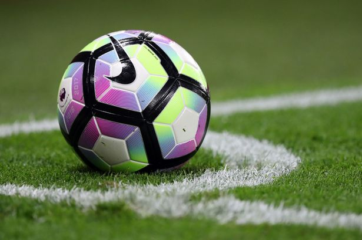
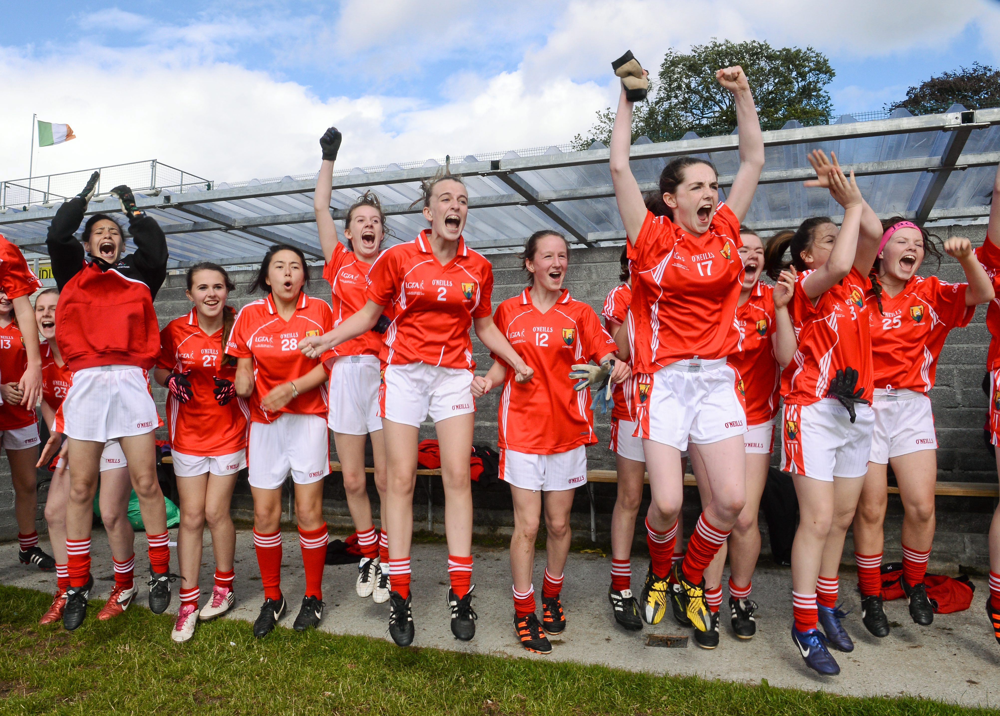
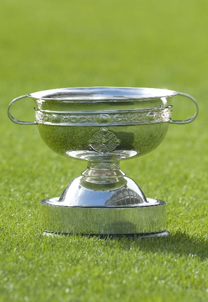
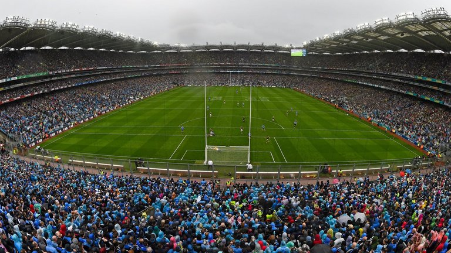

- 
- 


- 
- 
I've played football for years and ive always had a love for the game. I continue to play in junior grade as I have competed in every age group up along.
I previously played for my home club of Bishopstown
in Cork but as we got older many of the girls my age lost interest and so we were unable to field a team.
I currently play for a nearby club, St.Finbarrs where last year we won the county in grade C.
I have a great interest in Camogie also. My Dad is a big hurling fan and made us play as kids. My Dad played for Limerick when he was younger and now coaches the senior team in our local Bishopstown Club. However I stopped playing when I went into 5th year because I didnt have the time, but hoping I will return in the coming year.
It's a great game full of competitive, talented and admireable players.I really enjoy watching it but at times it can truly be devastating.